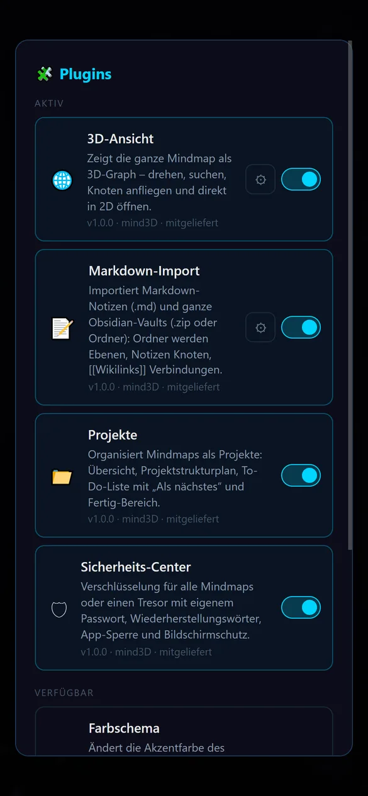

Was mind3D kann
Ein Überblick über alles, was in mind3D steckt, vom ersten Knoten bis zur verschlüsselten Sicherung. Alles funktioniert auf dem Handy und am PC gleich.
Ebenen statt Endlos-Fläche
Jeder Mindmap-Knoten ist zugleich eine eigene Mindmap. So wird aus einer Idee ein ganzes Universum, ohne dass die oberste Ebene unübersichtlich wird.
- Doppeltippen (am PC Doppelklick) öffnet einen Knoten
- ▲ in der Werkzeugleiste geht eine Ebene zurück
- Hineinzoomen öffnet einen Knoten, Herauszoomen führt nach oben
- Eine kleine Vorschau zeigt, was in einem Knoten steckt
- Verschieben mit dem Finger oder der Maus, zoomen mit zwei Fingern oder dem Mausrad

Fünf Arten von Knoten
Über das runde ＋ unten rechts fügst du Knoten hinzu.
Mindmap
Text
Bild
Sound
Dokument
Verbindungen, die etwas sagen
- Mit ⟷ zwei Knoten antippen, schon sind sie verbunden
- Verbindungen beschriften und einfärben
- Verbindungen über Ebenen hinweg: mind3D zeigt am Rand, wohin sie führen
- Viele Verbindungen zwischen denselben Bereichen werden gebündelt und gezählt, damit nichts zum Knäuel wird
- Knoten bekommen auf Wunsch eine eigene Rahmenfarbe

Bearbeiten ohne Angst
💾Automatisch gespeichert
Jede Änderung wird sofort gesichert. Zusätzlich gibt es alle zwei Minuten einen Zwischenstand, und 💾 speichert von Hand.
↶Rückgängig
Schritte zurück und wieder vor, am PC auch mit Strg+Z und Strg+Umschalt+Z.
🫳Ziehen und Ablegen
Knoten frei verschieben. Ziehst du einen Knoten auf einen Mindmap-Knoten, wandert er in dessen Ebene.

Projekte und Personen
Mehrere Personen können ein Gerät nutzen: Jeder Name hat seine eigene Projektliste. Ein Konto oder Passwort braucht es dafür nicht.
- Projekte anlegen, umbenennen, exportieren und löschen (Projekt lang gedrückt halten)
- Zuletzt genutzte Namen stehen im Startbildschirm zur Auswahl
- Neueste Bearbeitung steht oben
Import und Export
📤Exportieren
Jede Mindmap als Datei sichern oder weitergeben, als offenes JSON oder verschlüsselt als .m3e.
📥Importieren
Dateien im Dialog „Neues Projekt“ öffnen oder einfach im Dateimanager „mit mind3D öffnen“. mind3D erkennt das Format selbst und prüft jede Datei.
📝Markdown und Obsidian
Notizen und ganze Obsidian-Vaults werden zu Mindmaps: Ordner zu Ebenen, Notizen zu Knoten, [[Links]] zu Verbindungen. Mehr
🔁Nichts wird überschrieben
Gibt es den Namen schon, bekommt der Import eine Nummer, z. B. „Roman (1)“.
Erweiterbar mit Plugins
Plugins verändern Aussehen und Funktionen, ohne dass deine Mindmaps davon abhängen: Schaltest du eins aus, bleibt alles lesbar. Fünf Plugins sind schon dabei, weitere lassen sich aus einer Datei installieren.
Zu den Plugins
Sicherheit und Datenschutz
Komplett offline, ohne Tracker und auf Wunsch verschlüsselt. Ausführlich auf der Seite Sicherheit.
Für Android und Windows
| Android | Windows | |
|---|---|---|
| Voraussetzung | Android 10 oder neuer | Windows 10 oder 11 (64 Bit) |
| Installation | Google Play | Installer mit Startmenü- und Desktop-Verknüpfung, ohne Admin-Rechte |
| Bedienung | Touch, Zurück-Geste | Maus, Tastatur, Touchscreen |
| Entsperren bei Verschlüsselung | automatisch über den Sicherheitschip, optional Fingerabdruck | mit Passwort |
| Internet | wird nie benötigt | |
| Preis | 100 % kostenlos, ohne Werbung und ohne In-App-Käufe | |